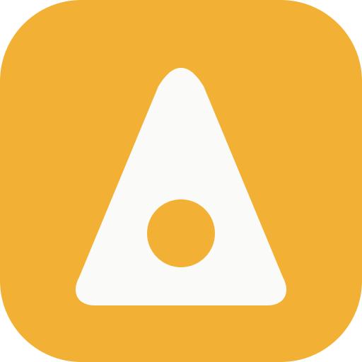
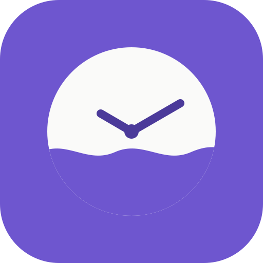

Music · Practice
Metronome
Made because a friend wanted a metronome that didn't suck. No ads, no subscription. Set 40–240 BPM, tap to find it, pick a time signature, and accent beat one.
Open Metronome →/* apps, sketched into shape */
See the apps Get in touchAt bitScribbles, every app begins the way good ideas do: as a rough sketch. We work out what the app is for, strip away everything it doesn't need, and then spend the real effort on the details. We care about clear type, calm layouts, and controls that behave the way your brain expects.
We build focused tools rather than sprawling platforms. Each one does a single job well and respects your time and attention. Nothing shouts, and nothing gets in the way.
The name is the method: precision where it counts, personality where it helps.
Each one is free to open in your browser, with nothing to sign up for.

Made because a friend wanted a metronome that didn't suck. No ads, no subscription. Set 40–240 BPM, tap to find it, pick a time signature, and accent beat one.
Open Metronome →
A liquid analog clock for your phone or desktop, inspired by a certain Marquis's wall clock in Paris. Slow, fluid motion you'd actually leave running. There's more to it than the hands let on.
Open Liquid Clock →Clear (adj.): a day without booze. Clear Tracker counts those days, not the slips. Tap to check in, set your own weekly intention, and mark milestones. Your data stays on your device.
Open Clear Tracker →We'd like to hear from you, whether something isn't working or you'd like to see a tool that doesn't exist yet.